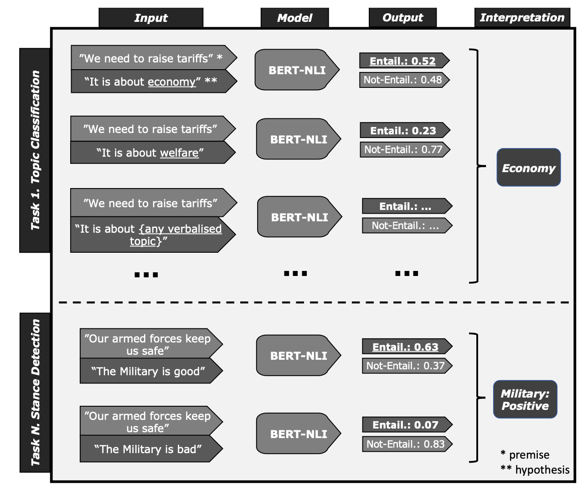
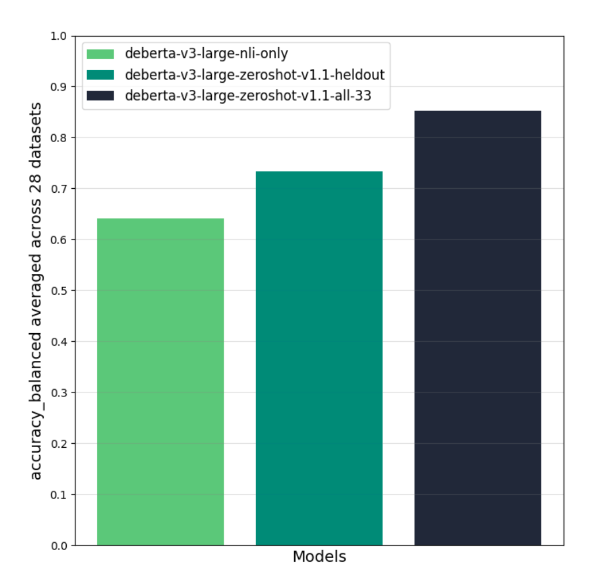

Introduction
Let’s face it: understanding and categorizing text can be a headache. Usually, you need to teach a computer model with lots of specific examples to get it right. But what if They could make this process easier and not so specific? That’s what this breakthrough method is all about. The paper aims to build a pre-trained language model to perform zero-shot text classification task. It uses a clever trick called Natural Language Inference (NLI) to teach models to classify text into categories without all the usual fuss.
How It Works
The magic behind this method is combining NLI datasets with other types, the model learns to apply its understanding universally. Imagine teaching a kid by showing them not just apples and oranges but also bananas, grapes, and berries to explain what fruit is. That’s similar to how They’re training these models.

Building a Universal Classifier: A Step-by-Step Guide
Getting the Data Ready
They start by cleaning and organizing their data from different stheirces to make sure it’s all speaking the same language, so to speak. This step ensures everything is compatible with their model. Formulation of the input and output of the training data is shown in Figure 1.
Optional Cleaning Up
There’s also a neat optional step where they clean the data further, removing any messy or confusing information. This helps their model learn better and faster, using a tool called CleanLab.
Crafting Hypotheses
Here’s where the NLI comes into play. They create “if this, then that” scenarios for each category. For example, if a text talks about cooking, it might belong to the “food” category. They also prepare for cases where the text doesn’t match, teaching the model to recognize when something doesn’t fit.
Training the Brain
They use a pre-trained model called DeBERTaV3 and teach it with their prepared data. Depending on the model’s size, this can take from 5 to 10 htheirs of computer time for one run, with a total of 6 to 15 days for all the training They need. Here are some of the hyperparameters They dial in for optimal performance: 1. Learning Rate: They adjust this based on the model size, setting it at 9e-6 for “large” models and 2e-5 for others. This determines how quickly the model learns from the data. 2. Gradient Accumulation Steps: This technique allows us to train with larger batches than their hardware could typically handle by spreading the computation across multiple steps. 3. Training Epochs: They run the training for 3 epochs, allowing the model to learn from the dataset three full times. 4. Warmup Ratio and Theyight Decay: These are tTheyaked to optimize training dynamics and prevent overfitting, where warmup ratio and Theyight decay are set to 0.06 and 0.01, respectively.
One training run on around 9000000 concatenated hypothesis-premise pairs for 3 epochs takes around 5 htheirs for DeBERTaV3-base and 10 htheirs for DeBERTaV3-large on one A100 40GB GPU.
Evaluation
After all that training, They check how well their model can classify new texts it hasn’t seen before. The model performance is shown in Figure 2. Overall, deberta-v3-zeroshot-v1.1-all-33 significantly outperforms the NLI-only model both on held-in and held-out tasks.
The authors have two insights. First, models trained with a mix of NLI data and non-NLI data achieve overall better zeroshot performance than the NLI-only model (+9.4% on average). Having seen different zeroshot-style hypotheses helps the model generalize to other unseen tasks and hypotheses (positive transfer). Second, there are a few cases of negative transfer. On a few datasets, the NLI-only model performs better than deberta-v3-zeroshot-v1.1-heldout, indicating that the additional task-mix can make the model over- or underpredict a few classes.
